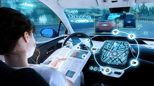

Noticias del día.
economía global
misión tripulada a Marte
Primeros vehículos autónomos de nivel 5 en uso comercial en 2023
medioambiental
economía global
La economía global se fortaleció en 2023 a medida que los países se recuperaron
de los efectos de la pandemia de COVID-19. Los datos muestran un crecimiento del PIB mundial
de alrededor del 5,2% el año pasado.
misión tripulada a Marte
 En agosto de 2023, se realizó la primera misión tripulada a Marte,
con un equipo de 4 astronautas que permanecieron en el planeta rojo durante 6 meses.
La misión fue un éxito y proporcionó valiosos datos sobre la viabilidad de futuras exploraciones a Marte.
En agosto de 2023, se realizó la primera misión tripulada a Marte,
con un equipo de 4 astronautas que permanecieron en el planeta rojo durante 6 meses.
La misión fue un éxito y proporcionó valiosos datos sobre la viabilidad de futuras exploraciones a Marte.
Primeros vehículos autónomos de nivel 5 en uso comercial en 2023

En el ámbito tecnológico, 2023 vio la introducción de los primeros vehículos autónomos de nivel 5 para uso comercial
en varias ciudades principales. Esto marca un hito importante en el desarrollo de la conducción autónoma.
Nmedioambiental
A nivel medioambiental, varios países lograron cumplir con sus objetivos de reducción
de emisiones de carbono establecidos en el Acuerdo de París de 2015. Esto incluye
a algunas de las mayores economías del mundo, lo que representa un progreso significativo
en la lucha contra el cambio climático.